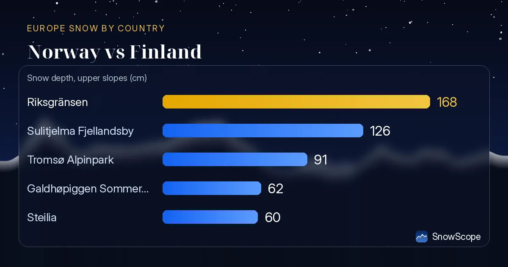
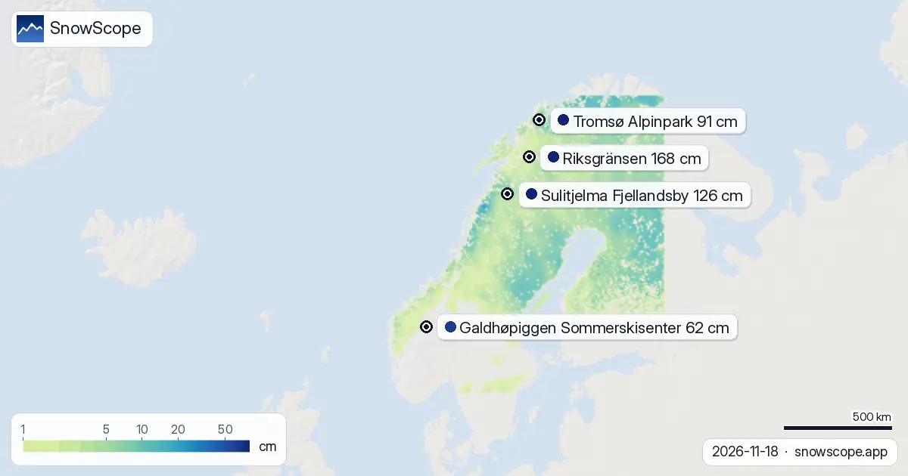

Norway vs Finland: 89 % white against 55 %
On 18 November, nearly nine out of every ten mountains in Norway carry snow, but Finland's white share is only just over half. The gap in depth is even starker: Norway's best resort reaches 168 cm, while Finland's deepest point stands at 26 cm.
See the live snow forecast for Riksgränsen in the SnowScope appSnow depth, powder alerts and the 3D map, free.
Where the snow lies
Storm tracks do not follow border lines. Right now, the snow edge sits decisively in Norway's favour. The mapped mountains and hills that are white add up to about 249,960 km² across Norway—that is 89 % of the country's high ground. Finland, just across the border, has only 55 % of its peaks and ridges covered.
In the last 24 hours alone, Norway gained 8,720 km² of new white ground. A week ago the cover was about 220,860 km², so the winter is filling in fast.
| Country | White | Deepest resort | Next 7 days |
|---|---|---|---|
| Norway | 89 % | Riksgränsen | 38 cm |
| Sweden | 83 % | Björkliden | 15 cm |
| Finland | 55 % | Kallin | 13 cm |

The resort picture
Riksgränsen holds the deepest snow: 168 cm measured on the upper slopes. Second comes Sulitjelma Fjellandsby at 126 cm, then Tromsø Alpinpark with 91 cm. Galdhøpiggen Sommerskisenter and Steilia sit at 62 cm and 60 cm. Of Norway's 155 tracked resorts, 142 have snow on their upper slopes.
Finland's leader, Kallin, has just 26 cm. Sweden's best resort, Björkliden, records 140 cm—closer to Norway's top than to Finland's.

What arrived in the past three days
The Lyngen Alps in northern Norway caught the most: 18 cm in three days. Across the country, at least 5 cm fell over an area of roughly 76,570 km². The last 72 hours brought peaks of 15 cm in the snowiest zones.
Individual resorts saw mixed gains. Tromsø Alpinpark picked up 9 cm, Sulitjelma Fjellandsby got 6 cm, while Riksgränsen added only 1 cm. The pattern shows the storms have been patchy.
Depth from valley floor to high peaks
Snow settles deeper as you climb. Between sea level and 500 m the average is 8 cm and 80 % of ground is white. By 1,000 m the average reaches 24 cm with full cover. Above 1,500 m you find 29 to 41 cm, with every slope white.
This matters for planning: low-lying runs in both countries still have bare patches, but anything above 1,000 m in Norway is continuous white. The lowlands in Finland are barely touched by this season's snow.
What the next week will bring
Up to 29 cm is forecast for the next three days, peaking on Saturday 21 November with 15 cm possible. The following week (26 November to 2 December) adds another 30 cm in the snowiest spots. This should shift the balance further in Norway's favour, burying more of the rocks and gaps below.
Finland and Sweden will see smaller additions: up to 13 cm and 15 cm respectively over the next week.
How this season compares with the past
Riksgränsen's 55 cm (measured at 708 m) is slightly below the typical 59 cm for mid-November. Sulitjelma Fjellandsby sits at 49 cm against a normal 52 cm. Neither resort is ahead of its usual pace. Galdhøpiggen Sommerskisenter, high at 2,015 m, has only 31 cm versus a typical 83 cm—it is running well behind.
The season has started well but not exceptionally. Much depends on what falls between now and April, when these valleys normally see their deepest snow.
Tips for skiers
- Stick to the high ground in both countries: above 1,500 m in Norway the snow base is solid; Finland's runs below 1,000 m are still risky for rocks.
- If you can wait until after 21 November, fresh snow will have settled and roads will be clearer.
- Early-season coverage means stones and branches may lurk under thin patches on lower slopes—test gently and use groomed runs first.
- Wind at altitude can pack the snow hard: expect variable conditions on ridges and expect soft turns in sheltered gullies.
- Consult the local avalanche bulletin before venturing off-piste.
About these numbers
Resort snow depths are the deepest snow on the resort's upper slopes on the date shown; they are estimates for an area, not a measurement at one point. Forecasts can change. Always read the official avalanche bulletin before going off-piste.
Cite this report
For research, teaching or the press: the numbers and charts are free to reuse under CC BY 4.0 with this citation.
SnowScope (2026), Norway vs Finland: 89 % white against 55 %, https://snowscope.app/blog/en/2026/11/norway-snow-vs-neighbours-18-november-2026.html, accessed 2026-11-18
SnowScope (Atlas Labs). (2026, November 18). Norway vs Finland: 89 % white against 55 %. SnowScope snow reports. https://snowscope.app/blog/en/2026/11/norway-snow-vs-neighbours-18-november-2026.html
BibTeX
@misc{snowscope2026norwaysnowvsneighbours18,
author = {{SnowScope (Atlas Labs)}},
title = {Norway vs Finland: 89 % white against 55 %},
year = {2026},
month = nov,
howpublished = {\url{https://snowscope.app/blog/en/2026/11/norway-snow-vs-neighbours-18-november-2026.html}},
note = {Published 2026-11-18 12:11 UTC; accessed 2026-11-18}
}· CC BY 4.0 · Methods, data and tools →
Riksgränsen: snow and temperature by height, this winter vs last (tools) →
Follow Riksgränsen
Free: a message when fresh snow is coming, and the forecast every morning.
More snow reports

Snow is falling on Slovenia's ski mountains today: about 37 cm on Kanin and 21 cm on Krvavec. Where the snow lies, how it compares with past winters, and the next snowy day.

Tornik on Zlatibor had up to 39 cm on its upper slopes on 15 November 2026; by Wednesday it had melted. Kopaonik barely turned white. The week day by day and what comes next.

Savin Kuk above Žabljak picked up 22 cm of snow from 13 to 19 November and still has 6 cm today. Kolašin 1450 and 1600 are bare. The week day by day, and the next chances.